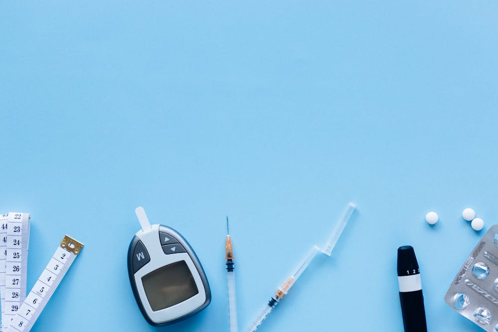
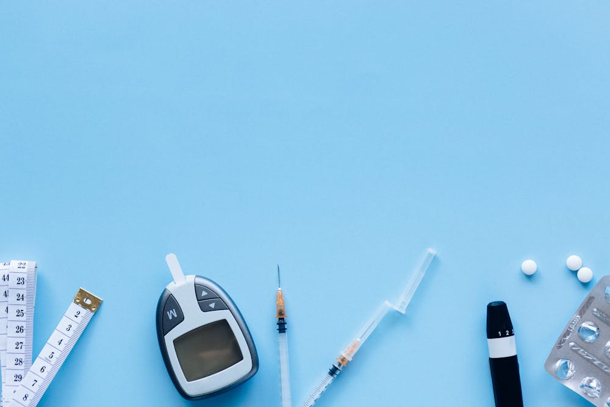

-
1. O que é diabetes?
Diabetes é uma doença crônica que ocorre quando o pâncreas não produz insulina suficiente ou quando o corpo não consegue utilizar eficazmente a insulina que produz.
-
2. Quais são os tipos?
Os principais tipos de diabetes são:
- Diabetes tipo 1
- Diabetes tipo 2
- Diabetes Gestacional
-
3. Quais são os principais sintomas?
Os sintomas mais comuns são:
- Sede excessiva
- Urina frequente
- Fome extrema
- Perda de peso inexplicável
- Fadiga
- Visão embaçada
-
4. Como é feito o diagnóstico?
O diagnóstico da diabetes é feito por meio de exames de sangue que medem os níveis de glicose no sangue em jejum e após a ingestão de uma solução de glicose. Os valores de referência para diagnóstico da diabetes são:
- Glicemia em jejum ≥ 126mg/dL
- Glicemia após 2 horas da sobrecarga de glicose ≥ 200 mg/dL
-
5. Como é feito o tratamento?
O tratamento da diabetes envolve a adoção de um estilo de vida saudável, que inclui uma alimentação equilibrada, a prática regular de exercícios físicos e o controle do peso. Além disso, o tratamento da diabetes pode incluir o uso de medicamentos higlicemiantes e insulina, conformew a orientação médica.
-
6. Como previnir?
Para previnir a diabetes, é importante adotar hábitos saudáveis, como:
- Manter uma alimentação equilibrada
- Praticar exercícios físicos regularmente
- Controlar o peso
- Evitar o consumo de tabaco e álcool
- Realizar exames de rotina para monitorar a glicemia
-
7.Quais são as complicações?
As complicações da diabetes podem afetar diversos órgãos e sistemas do corpo, como:
- Problemas cardiovasculares
- Problemas renais
- Problemas oculares
- Problemas neurológicos
- Problemas de pele
- Problemas de circulação
-
8. Como a dieta influencia no controle?
Uma alimentação balanceada ajuda a controlar os níveis de açúcar no sangue, o que é essencial para o manejo da diabetes.
-
9. Qual a importância dos exercícios físicos para pessoa com diabetes?
Exercícios ajudam a melhorar a sensibilidade à insulina e controlar os níveis de glicose no sangue.
-
10. Qual é o dia mundial da diabetes?
O dia 14 de novembro é o dia Mundial da diabetes!!